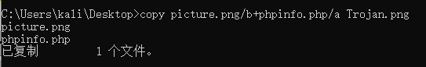
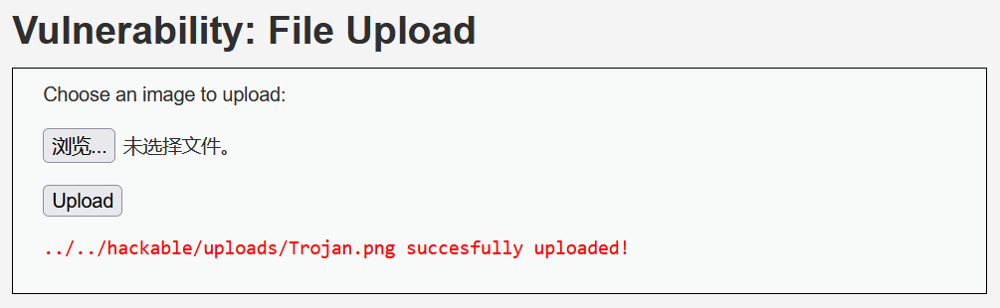
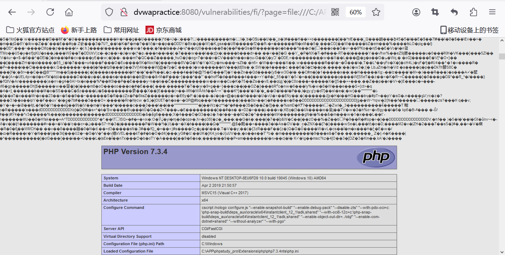
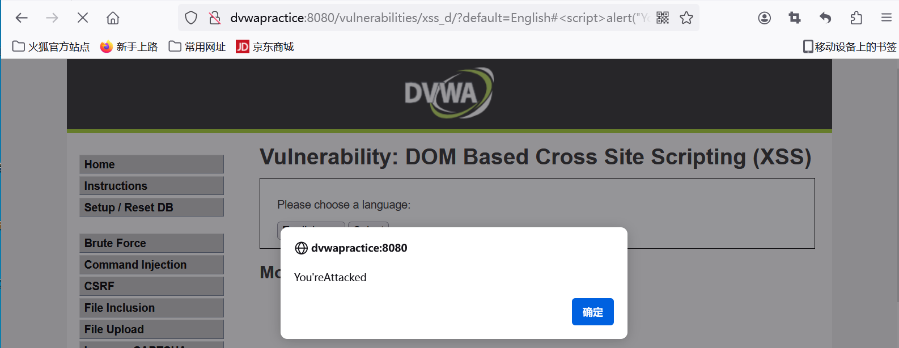

DVWA靶场
DVWA靶场学习笔记
DVWA(Damn Vulnerable Web Application)一个用来进行安全脆弱性鉴定的PHP/MySQL Web 应用，旨在为安全专业人员测试自己的专业技能和工具提供合法的环境，帮助web开发者更好的理解web应用安全防范的过程。本文包含DVWA靶场的环境配置、Burp工具配置以及DVWA靶场各漏洞high level的测试（靶场的漏洞均分为low/medium/high）。
一、环境配置
该部分主要参考各种帖子
VirtualBox安装win10虚拟机：
二、靶场测试
1. Burte Force（暴力破解）
“暴力破解”是一攻击手段，在web攻击中，一般会使用这种手段对应用系统的认证信息进行获取。其过程就是使用大量的认证信息在认证接口进行尝试登录，直到得到正确的结果。为了提高效率，暴力破解一般会使用带有字典的工具来进行自动化操作。
1.1 测试过程
使用admin/1234尝试登录，并使用Brup抓包如下：
页面提示用户名或密码不正确，使用Burp截获数据包，并将数据包发送到Intruder选项卡，选择Positions：
选定破解模式后配置相关参数：
找到token的值如下：
设置payload1，引入弱口令字典[7]（根据需要配置）：
设置payload2，选择类型为[Recursive grep]，将复制的token的值赋给第一个请求：
查看爆破结果(回复报文中length不一样的代表攻击成功)：
验证攻击结果：使用admin/passwrod（由爆破报文中对应的payload1值可知）登录验证，登录成功。如下所示：
1.2 修复建议
- 要求用户设置复杂的密码；
- 每次认证都使用安全的验证码；
- 对尝试登录的行为进行判断和限制（如：连续5次错误登录，进行账号锁定或IP地址锁定等）；
- 采用双因素认证；
2. Command Injection（命令注入）
命令注入漏洞也可被称为“远程代码执行”（RCE），因为攻击者通过命令注入漏洞可以尝试诱使web应用程序执行他们所提供的一系列有效载荷（在web应用程序中远程执行代码），而无需直接访问目标机器本身（例如：通过交互式shell的方式）。Web服务器将在运行该web应用程序的用户的权限下以及相关访问控制级别下处理并执行攻击者所提供的payload代码。
2.1 测试过程
查看对应源码：
1 | |
若输入为|| whoami经过上述规则替换后为|whoami则会执行ping | whoami，实际测试结果如下：
如上所见，成功执行注入的命令。
2.2 修复建议
限定输入类型, 创建一份安全字符串列表，限制用户只能输入该列表中的数据；
尽量不要使用命令执行函数；
客户端提交的变量在进入执行命令函数前要做好过滤和检测；
在使用动态函数之前，确保使用的函数是指定的函数之一。
3. Cross Site Request Forgery （CSRF：跨站请求伪造）
CSRF（跨站请求伪造），全称为Cross-site request forgery，简单来说，是攻击者利用受害者尚未失效的身份认证信息，诱骗受害者点击恶意链接或含有攻击代码的页面，在受害者不知情的情况下以受害者的身份像服务器发起请求，从而实现非法攻击。
3.1 测试过程
漏洞分析：
High级别的代码增加了Anti-CSRF token机制，用户每次访问改密页面时，服务器会返回一个随机的token，向服务器发起请求时，需要提交token参数，而服务器在收到请求时，会优先检查token，只有token正确，才会处理客户端请求。
具体测试：
利用反射型XSS攻击输入<img src =1 onerror = alert(document.cookie)>获取cookie
- 伪造修改密码的请求并使用Burp修改其cookie为XSS攻击得到的cookie

返回结果显示攻击成功：
3.2 修复建议
使用CSRF令牌：在每个敏感操作的表单或请求中加入一个唯一的CSRF令牌，该令牌在服务器端生成并验证。攻击者无法轻易获取或伪造这个令牌;
检查Referer头：检查请求的Referer头，以确认请求来源是否为同一站点；
双重提交Cookie：将CSRF令牌存储在Cookie中，并在请求中包含同样的令牌，服务器验证两者是否一致；
限制请求方法：对于敏感操作只允许POST、PUT、DELETE等非GET方法，因为GET请求更容易被外部引用。
4. File Inclusion（文件包含漏洞）
File
Inclusion（文件包含），是指当服务器开启了allow_url_include选项时，通过一些PHP的特性函数（比如：include()，require()，include_once()和require_once()）利用URL去动态包含文件，此时如果没有对文件来源进行严格审查，就会导致任意文件读取或者任意命令执行。
4.1 测试过程
源码分析：
1 | |
漏洞分析：可以使用伪协议file://访问其本地文件。
攻击测试：
正常访问网页提供的文件时的URL如下：
利用file://构造恶意的URL
http://dvwapractice:8080/vulnerabilities/fi/?page=file:///C:/APP/phpstudy_pro/WWW/DvwaPractice/phpinfo.php
非法访问本地文件：
4.2 修复建议
使用白名单机制：定义允许的文件列表，确保只包含预定义的安全文件；
限制目录访问：通过设置安全目录并使用 realpath 确保包含的文件位于安全目录中，防止路径穿越攻击；
严格验证输入：使用 realpath 和 strpos 检查文件路径，确保文件在预期的目录中。
5. File Upload（文件上传）
文件上传攻击是指攻击者通过上传恶意文件到服务器，从而执行恶意代码、获取系统权限或进行其他恶意操作的一种攻击方式。这种攻击通常利用文件上传功能中的安全漏洞来实现，具有较高的威胁性。
5.1 测试过程
制作简单的图片马：

上传图片马：

利用前述的文件包含漏洞，触发该图片马：
http://dvwapractice:8080/vulnerabilities/fi/?page=file:///C:/APP/phpstudy_pro/WWW/DvwaPractice/hackable/uploads/Trojan.png

5.2 修复建议
检查文件扩展名，只允许上传白名单内的文件；
确保文件名不包含任何可能被解释为目录或遍历序列 ( ../) 的子字符串；
重命名上传的文件以避免可能导致现有文件被覆盖的冲突；
隐藏上传文件路径；
上传文件的存储目录禁用执行权限。
6. Insecure CAPTCHA（不安全的验证码）
不安全的验证码（Insecure CAPTCHA）指的是一种验证机制设计或实现上存在漏洞，无法有效阻止自动化脚本或恶意用户的攻击，从而使得其保护网站或应用的功能失效。
6.1 测试过程
漏洞分析：
服务器的验证逻辑是当$resp是ture，或者参数recaptcha_response_field等于hidd3n_valu3且http包头的User-Agent参数等于reCAPTCHA时，则认为已经通过了验证码的检查。其中resp参数是由指谷歌返回的验证结果，参数recaptcha_response_field和User-Agent在客户端发送的数据包中。因此仅需伪造客户端的数据包，正确设置参数即可绕过验证机制。
测试过程：
首先抓包：
修改数据包参数使得$_POST['g-recaptcha-response']=='hidd3n_valu3'以及$_SERVER[ 'HTTP_USER_AGENT' ]== 'reCAPTCHA'，具体如下：
将修改后的数据包放行后成功修改口令，返回如下界面：
6.2 修复建议
增加
Anti-CSRF token机制防御CSRF攻击，利用PDO技术防护sql注入，同时要求用户输入之前的密码，进一步加强了身份认证；服务器端验证：确保所有验证逻辑在服务器端进行，防止客户端篡改；
使用多种验证方式：结合图片选择、拖动验证、音频验证码等多种方式，增加破解难度。
7. SQL Injection（SQL注入）
SQL是操作数据库数据的结构化查询语言，网页的应用数据和后台数据库中的数据进行交互时会采用SQL。而SQL注入是将Web页面的原URL、表单域或数据包输入的参数，修改拼接成SQL语句，传递给Web服务器，进而传给数据库服务器以执行数据库命令。如Web应用程序的开发人员对用户所输入的数据或cookie等内容不进行过滤或验证（即存在注入点）就直接传输给数据库，就可能导致拼接的SQL被执行，获取对数据库的信息以及提权，发生SQL注入攻击。
7.1 测试过程
进行字符型和整数型注入测试，发现存在注入漏洞，并查出所有ID内容：
进一步构造注入，查询返回的字段数。字段2成功返回查询结果：
字段3查询失败，由此可知，查询结果包含2个字段：
根据漏洞查询其他信息。查询数据库名称：
查询表名：
查询用户名以及其登录口令：
7.2 修复建议
使用预处理语句（Prepared Statements）：预处理语句将SQL代码和数据分离，避免了攻击者插入恶意代码；
最小权限原则：仅授予数据库用户所需的最低权限，避免使用拥有过多权限的数据库账户执行查询；
使用ORM（对象关系映射）：ORM工具将数据库操作抽象成对象，使得SQL注入更加困难。常见的ORM包括Django ORM、SQLAlchemy等。
8. SQL Injection Blind（SQL注入：盲注）
盲注（Blind SQL Injection）是 SQL 注入的一种特殊形式，攻击者无法直接获取数据库的错误消息或查询结果，只能通过观察应用程序的行为变化来推断数据库的响应。
8.1 测试过程
尝试判断注入类型：
由上述尝试可判定存在字符型注入。
接下来尝试判断数据库名的长度：
由此判断数据库名称长度为4。
8.2 修复建议
使用预编译语句（Prepared Statements）：预编译语句使用参数化查询，可以有效防止 SQL 注入。
输入验证和输出编码：对用户输入进行严格验证和清理，防止恶意输入。在输出到 HTML、JavaScript 等环境时，进行正确的编码；
最小特权原则：数据库用户权限设置为最低，防止通过 SQL 注入获得更高权限；
数据库防护机制：使用 Web 应用防火墙（WAF）和数据库防火墙，检测和阻止恶意请求。
9. Weak Session IDs（弱会话）
弱会话ID（Weak Session IDs）指的是在网络应用程序中，生成和管理用户会话的标识符（Session ID）存在安全性问题，容易被攻击者猜测、窃取或篡改，从而导致用户会话被劫持。
9.1 测试过程
产生cookie并使用Burp截获数据包：
手动清除浏览器cookie：
验证再次访问时需要登录：
使用截获的cookie实现非登录访问。直接访问http://dvwapractice:8080/vulnerabilities/weak_id/，使用Burp截取请求数据包：
使用前述步骤截取的cookie替换该数据包的cookie：
成功访问需要登录的页面内容：

9.2 修复建议
使用加密安全的随机生成器：采用加密安全的随机数生成器来生成会话ID，确保其难以预测和猜测；
增加会话ID长度：会话ID应足够长（如128位或以上），以增加暴力破解的难度；
确保唯一性：确保每个会话ID在全局范围内唯一，不重复；
使用HTTPS加密传输：通过HTTPS协议加密传输会话ID，防止被中间人攻击拦截；
设置会话有效期：为会话ID设置合理的过期时间，确保长时间未活动的会话自动失效；
10. Cross Site Scripting（XSS：跨站脚本攻击）
跨站脚本攻击（Cross Site Scripting，简称 XSS）是一种常见的Web安全漏洞，攻击者通过在目标网站中注入恶意脚本，使得这些脚本在其他用户的浏览器中执行，从而窃取用户数据、劫持用户会话、伪造用户操作等。主要分为：反射型 XSS（Reflected XSS）、存储型 XSS（Stored XSS）和DOM 型 XSS（DOM-based XSS）。
10.1 测试过程
- 反射型XSS
源码分析：
1 | |
分析得知仅过滤< script >，尝试使用其他标签如<img>进行攻击，在输入框中填充<img src =1 onerror = alert("You'reAttacked")>，可见如下弹窗：
- 存储型XSS
源码分析：
1 | |
发现对name字段仅作部分敏感字符的替换，替换存在可利用的漏洞。
尝试在name栏输入恶意代码，发现存在输入长度限制:
使用Burp截取数据包，修改其中的name栏内容为恶意代码<img src =1 onerror = alert("You'reAttacked")>：
修改后放行数据包，客户端成功出现弹窗：
再次填入正常数据后提交仍然出现弹窗，证明存储型XSS攻击成功：
- DOM型XSS
源码分析：
1 | |
考虑在English后面使用&或者#，构造url：
http://dvwapractice:8080/vulnerabilities/xss_d/?default=English#<script>alert("You'reAttacked")</script>
攻击效果如下：

10.2 修复建议
输入验证和清理：对用户输入进行严格的验证和清理，过滤或编码特殊字符，防止恶意脚本注入。
输出编码：对所有输出到浏览器的内容进行编码，特别是HTML、JavaScript、CSS等，防止注入的脚本被执行。
使用安全库和框架：采用成熟的安全库和框架，如OWASP ESAPI，提供了防御XSS的功能。
内容安全策略（CSP）：配置CSP HTTP头，限制浏览器加载和执行的资源，减少XSS攻击的风险。
11. Content Security Policy (CSP) Bypass（内容安全策略绕过）
内容安全策略（Content Security Policy，CSP）是一种Web安全机制，通过指定允许加载的资源（如脚本、样式表、图像等）的来源，帮助防止跨站脚本攻击（XSS）等威胁。尽管CSP可以显著提高Web应用的安全性，但如果配置不当或存在漏洞，CSP策略也可能被绕过（CSP Bypass）。
11.1 测试过程
漏洞分析：
由题干可知，该页面计算sum时会调用../..//vulnerabilities/csp/source/jsonp.php中的函数，结合Burp抓取的数据包：

尝试对参数callback进行注入：
include=<script src="source/jsonp.php?callback=alert('xss');"></script>
攻击成功：
11.2 修复建议
禁止内联脚本和事件处理程序：使用
unsafe-inline会降低CSP的安全性，应避免允许内联脚本。可以使用哈希或Nonce来允许特定的内联脚本。
12. JavaScript Attacks （JS脚本攻击）
JavaScript攻击是指利用JavaScript代码进行的各种网络攻击。由于JavaScript在现代Web开发中的广泛使用，它成为攻击者的一个主要目标。常见的攻击类型有：XSS（跨站脚本攻击）、CSRF（跨站伪造攻击）、Clickjacking（点击劫持 ）等形式。
12.1 测试过程
查看high级别对应high.js源码，发现是经过混淆后的代码：
使用JS解密网站http://deobfuscatejavascript.com/#，查看生成token的相关代码：
分析得知，生成 token 的步骤是：
- 执行
token_part_1("ABCD", 44)； - 执行
token_part_2("XX")； - 点击按钮的时候执行
token_part_3。
修改部分代码（其余部分不动），带入success执行生成token(找个网站执行修改后的js代码):
1 | |
在原页面点击submit，使用Burp抓包，修改其中的token和phrase。抓包如下：
修改字段后：
放行修改后的数据包，Burp渲染返回结果如下：
12.2 修复建议
输入验证和输出编码：确保所有用户输入都经过严格验证，输出时进行适当编码；
内容安全策略 (CSP)：使用CSP头限制哪些脚本可以执行；
HttpOnly和Secure标志：在cookies上设置HttpOnly和Secure标志，防止JavaScript访问敏感数据；
13. Authorisation Bypass （未授权访问）
授权绕过（Authorisation Bypass）是一种严重的安全漏洞，攻击者通过利用系统的漏洞或错误配置，绕过正常的访问控制机制，获得未经授权的访问权限。这种漏洞可能导致敏感信息泄露、数据篡改、系统破坏等严重后果。
13.1 测试过程
管理员admin用户可直接访问authbypass页面及相关资源，攻击目标：使用其他用户gordonb / abc123访问或修改相关资源。
切换到指定普通用户：
尝试访问用户数据表，返回错误报告，提示无权限，具体如下：
观察更用户数据操作，发现其使用的post方法：
尝试伪造post数据包，非授权修改用户数据。原用户信息：
{"id":5,"first_name":"Bob","surname":"Smith"}
修改后，返回成功：
再次登录查看信息已经变更：
13.2 修复建议
严格的访问控制检查：对所有请求进行严格的权限验证，确保每个请求都经过权限检查。使用统一的访问控制机制，避免遗漏。
最小权限原则（Principle of Least Privilege）：只授予用户完成任务所需的最低权限，避免过度授权；
参数验证和加密：对 URL 参数和请求参数进行严格验证，防止篡改。使用加密或哈希技术保护敏感参数。
14. Open HTTP Redirect（重定向攻击）
HTTP 重定向攻击（HTTP Redirect Attack）是一种网络攻击，利用 HTTP 协议中的重定向机制，将用户引导至恶意网站或非法页面，进而进行钓鱼、恶意软件传播等恶意行为。攻击者通常通过操控重定向响应头或 URL 参数实现这种攻击。
测试过程
修改页面代码，构造恶意跳转：
payload如下：
?redirect=https://www.baidu.com?6=info.php
点击链接，成功跳转：
修复建议
验证重定向目标：在实现重定向时，确保目标URL是合法和可信的。避免直接使用用户输入的URL进行重定向；
使用安全的重定向方法：使用相对路径或白名单验证重定向目标，而不是直接接受和使用用户提供的URL；
实施内容安全策略（Content Security Policy, CSP）：使用CSP头限制网页可以加载的资源，防止加载来自不可信来源的内容。
小芝士
终端中命令的执行逻辑：
Windows中：
"|":直接执行后面的语句。例如:
ping 127.0.0.1|whoami."||":如果前面执行的语句执行出错，则执行后面的语句，前面的语句只能为假。例如:
ping 2|whoami."&": 如果前面的语句为假则直接执行后面的语句，前面的语句可真可假。例如:
ping 127.0.0.1&whoami."&&":如果前面的语句为假则直接出错，也不执行后面的语句，前面的语句只能为真。例如:
ping 127.0.0.1&&whoami.
Linux中：
";":执行完前面的语句再执行后面的。例如:
ping 127.0.0.1;whoami."|"：显示后面语句的执行结果。例如:
ping 127.0.0.1|whoami."||"：当前面的语句执行出错时，执行后面的语句。例如:
ping 1||whoami."&" :如果前面的语句为假则直接执行后面的语句，前面的语句可真可假。例如:
ping 127.0.0.1&whoami."&&" :如果前面的语句为假则直接出错，也不执行后面的，前面的语句只能为真。例如:
ping 127.0.0.1&&whoami.